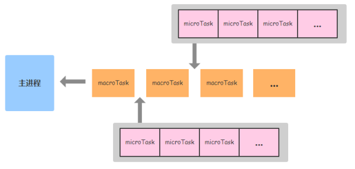

JavaScript 事件循环浅析
函数执行过程
JavaScript中，内存可以划分为调用栈（Call Stack）、堆（Heap）以及队列（Queue）等几个部分。
当我们调用一个函数时，函数地址、参数、局部变量会压入 stack 中。查看此文章帮助理解。
函数中分配的变量，在使用Number、String、Boolean这种基本数据类型时会存在 stack 中，而对象、数组这些复杂类型则存储在 heap(堆) 中， stack 只存放了它们对应的指针。当函数执行结束从 stack 中弹出来时，只有对象的指针被弹出，而真正的值依然存在 heap 中，然后由垃圾回收器自动的清理回收。
事件循环
v8 是单线程的，但底层的 C++ 不是。这意味着我们在执行一些非阻塞的操作时，可以在底层开启一个新线程与主线程的js代码同时执行。当这个阻塞操作执行完毕后，返回值和回调组成一个任务添加进任务队列中。当 stack 为空即主线程的代码执行完毕时，主线程会查询任务队列，顺序执行任务队列中的任务。
任务队列分为 macrotack 队列和 microtack 队列:
macrotask 包括类似鼠标点击事件的回调、setTimeout、setInterval、setImmediate、requestAnimationFrame, I/O, UI rendering 等。
microtask 包括process.nextTick, Promises, Object.observe, MutationObserver 等。
事件循环执行顺序如图所示：

这个图有个点没描述清楚，microtask队列总是在下个macrotask执行前执行，即 stack 为空，主线程的代码执行完毕后，主线程会先执行microtask 队列，然后执行下个 macrotask ,执行完毕后如果microtask 队列中有任务，执行microtask…
任何在microtask执行期间添加的microtask，会被添加到本轮循环的 microtask 队列中的最后执行。
最后用个例子来理解一下：
1 | (function test() { |
本文参考并引用了如下文章：